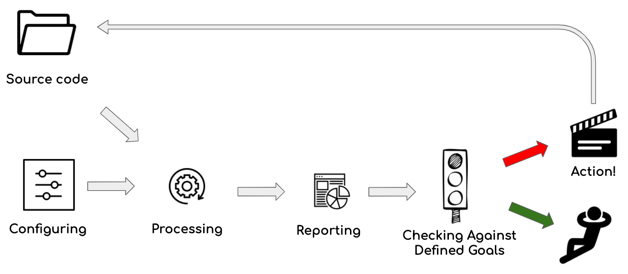
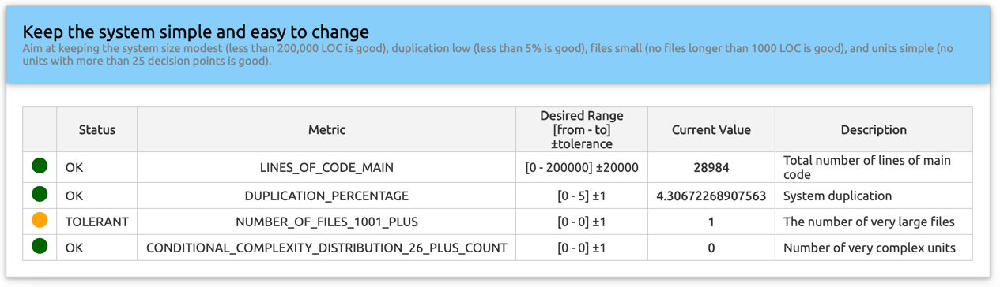

Controls
In Sokrates, you can define traffic lights like controls. For each of the metrics that Sokrates measures, you can specify a control with the threshold and tolerance. Sokrates will then generate a report labeling each control with one of the following states:
- OK (green) the measured value is below the threshold
- tolerant (yellow) the measured value is above the threshold but within the tolerance range
- failed (red), the measured value is above the threshold and the tolerance level.

Figure 1: The goals-and-controls mode, a simplified analyze-and-reflect mode, where you can replace the reflect part with a set of clearly defined traffic lights like controls. For each of the metrics that Sokrates measures, you can specify a control with the threshold and tolerance. And then react when the measurements are out of safe range.
For instance, let’s assume that we have defined a control for duplication, setting the threshold to 5% and the tolerance level to 2%. If the measured duplication level is 4%, Sokrotes will label the control as OK (green). For the measured duplication level of 8%, Sokrates will label the control as failed (red). If the measured duplication is 6%, Sokrates will mark the controls as tolerant (yellow).
Configuring Controls
You configure controls as a part of a Sokrates JSON configuration file, as a part of the goalsAndControls section. You can define multiple goals, each associated with one or more controls.
The following example code fragment is taken from the JUnit5 Sokrates configuration file:
{
"goalsAndControls": [
{
"goal": "Keep the system simple and easy to change",
"description": "Aim at keeping the system size modest (less than 200,000 LOC is good), duplication low (less than 5% is good), files small (no files longer than 1000 LOC is good), and units simple (no units with more than 25 decision points is good).",
"controls": [
{
"metric": "LINES_OF_CODE_MAIN",
"description": "Total number of lines of main code",
"desiredRange": {
"min": "0",
"max": "200000",
"tolerance": "20000"
}
},
{
"metric": "DUPLICATION_PERCENTAGE",
"description": "System duplication",
"desiredRange": {
"min": "0",
"max": "5",
"tolerance": "1"
}
},
{
"metric": "NUMBER_OF_FILES_1001_PLUS",
"description": "The number of very large files",
"desiredRange": {
"min": "0",
"max": "0",
"tolerance": "1"
}
},
{
"metric": "CONDITIONAL_COMPLEXITY_DISTRIBUTION_26_PLUS_COUNT",
"description": "Number of very complex units",
"desiredRange": {
"min": "0",
"max": "0",
"tolerance": "1"
}
}
]
}
]
}Figure 2: A fragment of a Sokrates configuration file describing the controls.
Controls Report
Based on the configured values, the Sokrates will generate an HTML report, as well as the text file with the analysis results (by default stored in “_sokrates/reports/data/text/controls.txt”).
The example of a Sokrates controls HTML report you can find here.

Figure 3: A screenshot from a Sokrates controls report. For each control metric, the measured value is compared with a defined range and tolerance.
The equivalent text data file you can find here.
goal: Keep the system simple and easy to change
control metric: LINES_OF_CODE_MAIN
status: OK
desired range: [0 - 200000] ±20000
value: 24088
description: Total number of lines of main code
goal: Keep the system simple and easy to change
control metric: DUPLICATION_PERCENTAGE
status: FAILED
desired range: [0 - 5] ±1
value: 10.077475219323231
description: System duplication
goal: Keep the system simple and easy to change
control metric: NUMBER_OF_FILES_1001_PLUS
status: OK
desired range: [0 - 0] ±1
value: 0
description: The number of very large files
goal: Keep the system simple and easy to change
control metric: CONDITIONAL_COMPLEXITY_DISTRIBUTION_26_PLUS_COUNT
status: OK
desired range: [0 - 0] ±1
value: 0
description: Number of very complex unitsFigure 4: A content of a textual data file about controls that Sokrates export.